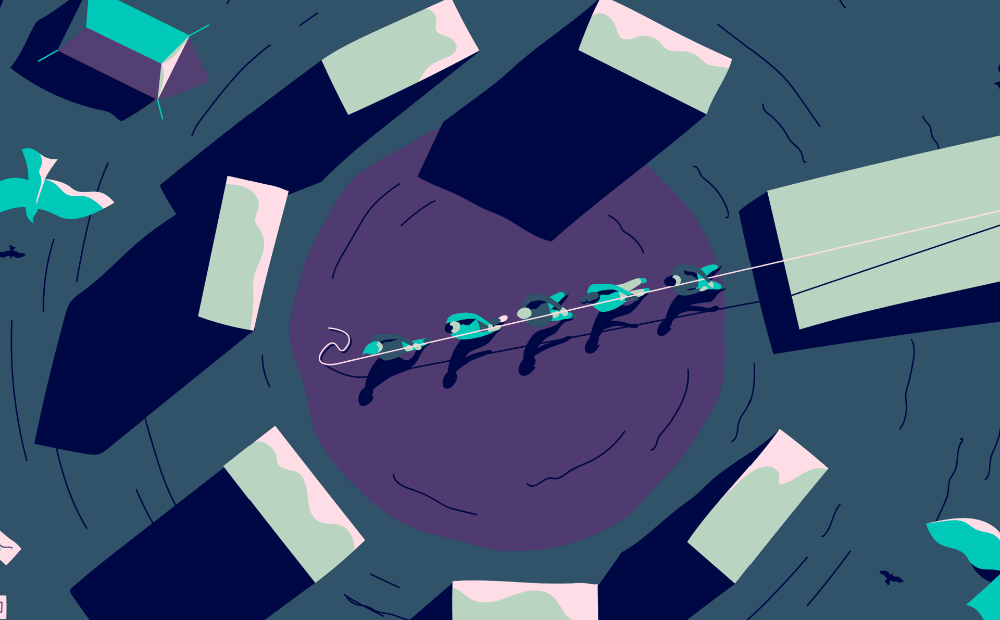

Come é andata questa settimana?
i
Sei andato/a nel concreto degli obiettivi,
Organizzazione
Sei andato/a nel concreto degli obiettivi,
pianificando le tue priorità di conseguenza

Collaborazione
Sei riuscito/a a collaborare, connetterti e gestire
i momenti difficili con le altre persone

Intelletto
Hai esplorato, elaborato, risolto e messo alla prova
la tua visione delle cose

Emozioni
Hai ascoltato te stesso/a e le tue emozioni,
dando loro spazio nel rispetto degli altri

Motivazione
Hai sentito tuo ciò che hai fatto, portandolo avanti
con intraprendenza e determinazione
Cultura
Hai sentito la tua cultura allineata con quella di Sketchin


Voglio parlarne con un coach